오늘의 과제

박사오늘은 세 사람을 픽셀 밖으로 데려간다. 바뀌어도 되는 것과 안 되는 것은?

주판봇'실사로 바꿔 줘' 한 줄이면 됩니다! 이번엔 자신 있습니다!

초파리 연구원하루의 번이 사라지면 그건 하루가 아니잖아. 고정할 것부터 적자.

모아제 리본은 꼭 왼쪽 귀 위예요! 그것도 적어 주세요!
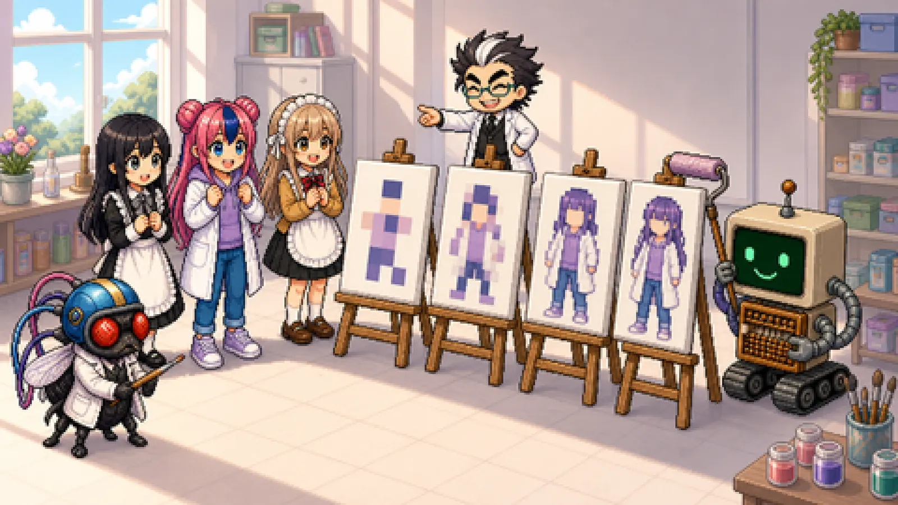
세 모델이 모두 나섭니다. 같은 자세, 같은 빛(왼쪽 위)으로 서서 화풍만 바꿉니다. 1~3부의 원리를 이번에는 프롬프트의 말로 옮깁니다.
그림 실력·코드·수식을 몰라도 됩니다. 실험을 눌러 보며 따라오세요.
머리 모양·색, 눈 색, 의상, 좌우가 다른 표식을 빠짐없이 문장으로 적습니다
택배 주소를 '파란 대문 집'이라고만 쓰면 엉뚱한 곳에 갑니다. 동·호수까지 적어야 합니다.
캐릭터 저장소(fruitfly-lab-expressions)의 '아이덴티티 고정값' 표가 바로 이 목록입니다. 이 시리즈의 모든 그림 요청에 같은 문장을 씁니다.


하루는 '분홍 머리·남색 줄·앞머리 가운데 남색 줄·번 두 개·파란 눈·라벤더 후드티·흰 랩코트' 일곱 개가 고정값입니다.
시아는 '머리 장식 없음', 모아는 '리본은 왼쪽 귀 위'처럼 '없다'와 '좌우'도 고정값입니다. 이런 것을 빼면 AI가 반대로 그리기 쉽습니다.
작업에서는 이 문장을 복사해 두고, 화풍 문장만 바꿔 붙입니다.
AI가 그린 시아에 흰 머리띠가 생겼습니다. 프롬프트에는 머리띠 이야기가 없었습니다. 왜일까요?
'메이드'라는 낱말 근처의 흔한 그림에는 머리띠가 많습니다. '없음'도 적어야 합니다: 'no headdress'.
같은 자세·같은 빛을 두고 화풍 문장만 바꿉니다. 픽셀을 늘리기만 하면 실사가 되지 않습니다
사진을 크게 확대하면 흐려질 뿐 없던 털 한 올이 생기지 않습니다.
이 시리즈의 그림 요청은 세 사람 × 네 화풍을 같은 자세·같은 빛으로 맞췄습니다. 비교할 때 바뀌는 것이 화풍 하나뿐이어야 원인을 알 수 있습니다.

네모 크기 1은 원래 그림, 크기를 키울수록 눈·머리 번 같은 작은 특징이 뭉개집니다.
반대로 작은 픽셀 그림을 실사로 가려면 사라진 정보를 '새로 그려야' 합니다. 이때 고정 문장이 무엇을 그릴지 정해 줍니다.
아래 그림은 세 사람을 같은 자세·같은 빛으로 네 화풍에 옮긴 것입니다.
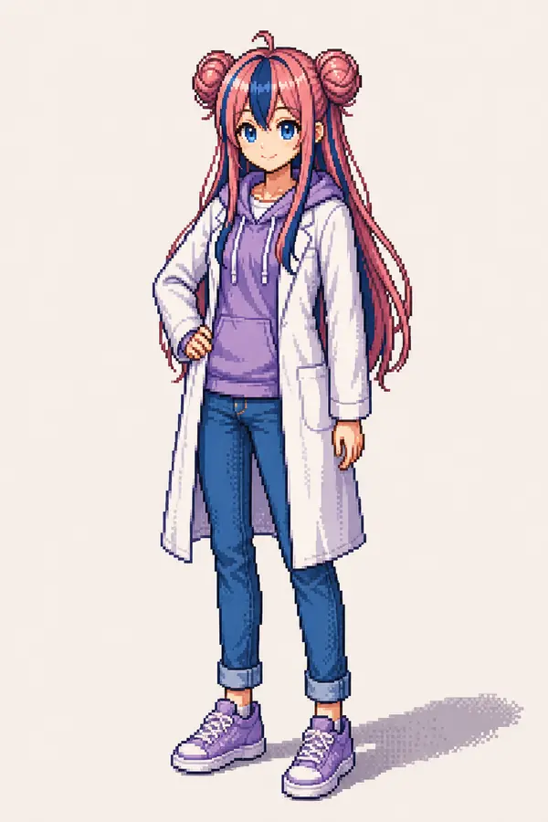
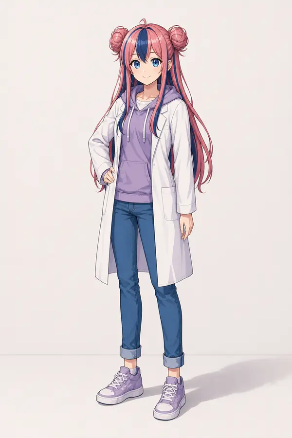
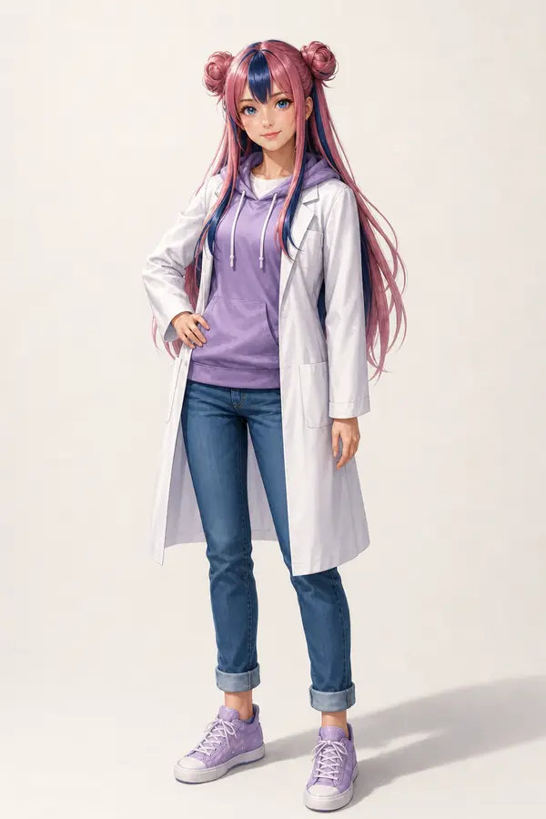
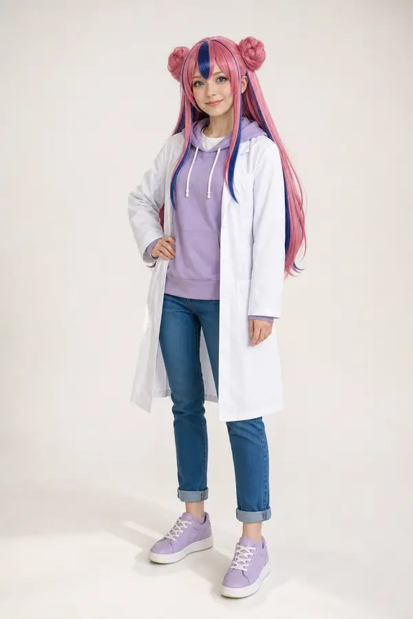
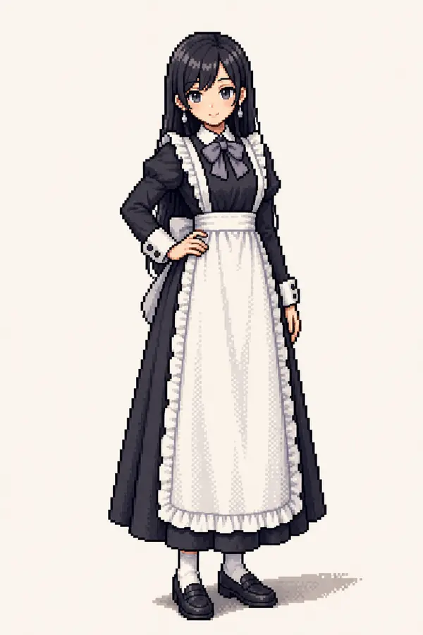
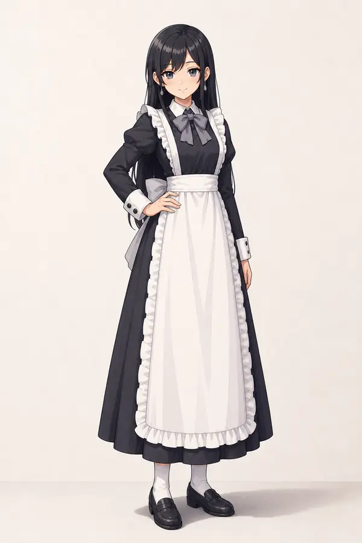
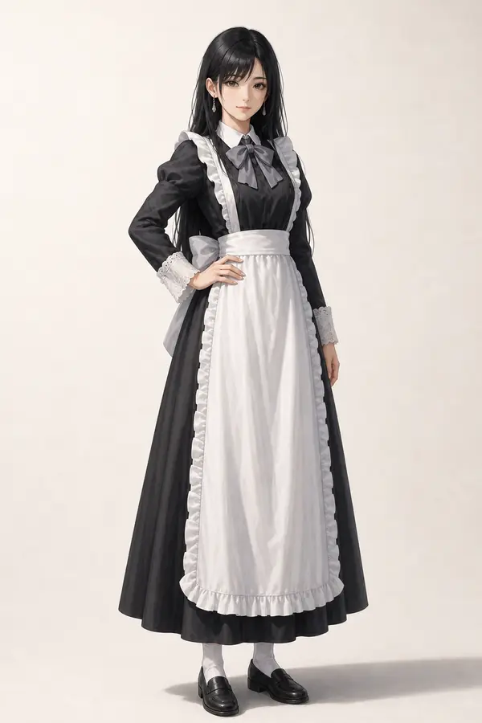
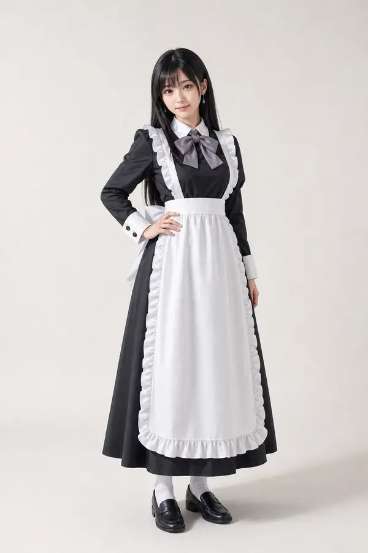
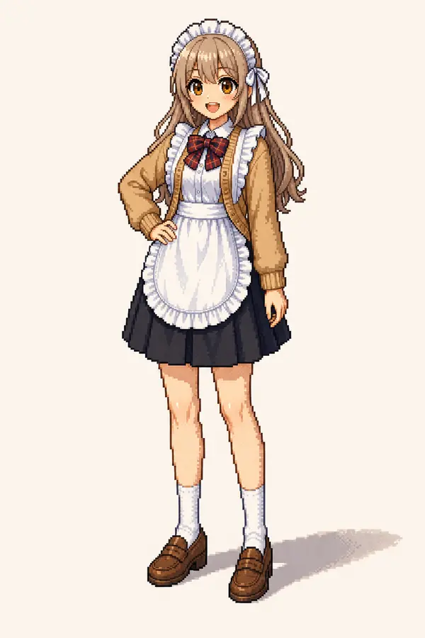
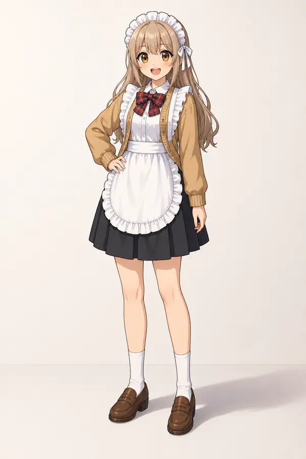
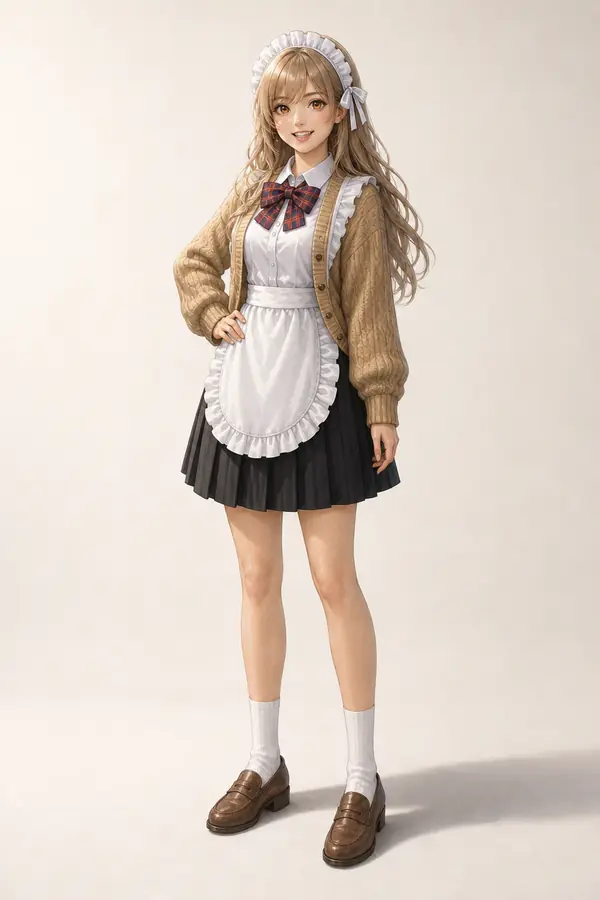
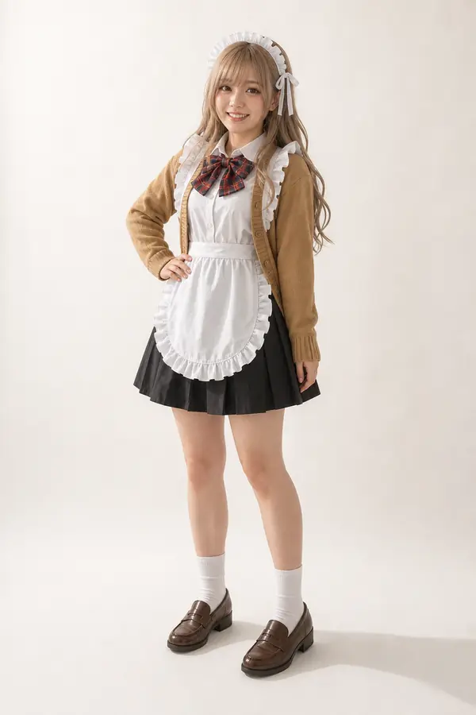
실사풍은 이 캐릭터를 코스프레한 가상의 성인 모델 사진으로 만든 것입니다. 실존 인물이 아닙니다.
'이 픽셀 그림을 고화질로' 요청했더니 흐릿하게 번진 큰 네모가 나왔습니다. 무엇이 잘못됐을까요?
확대(업스케일)만 했고 '다시 그리기'를 하지 않았습니다. 화풍 문장과 고정 문장을 주고 새로 그리게 해야 합니다(6부 f7).
원본 그림을 주고 다시 그릴 때, 잡음을 몇 단계부터 넣을지가 '강도'입니다

학교 수학으로 보면 — 비례식 — 전체 단계 중 다시 그리는 부분의 비율입니다.
| 식 조각 | 뜻 |
|---|---|
| 강도 | 0~1 사이 값(도구에 따라 '디노이즈 강도'·'변형 정도') |
| 전체 단계 수 | 잡음 걷어 내기 반복 횟수 |

사진 보정 앱의 '필터 강도'를 0%에서 100%로 올리면 원본 느낌이 점점 사라집니다.
알맞은 강도는 도구·화풍 차이에 따라 다릅니다. 픽셀에서 실사처럼 차이가 크면 더 높은 강도와 고정 문장이 함께 필요합니다. 이 실험의 구간은 예시입니다.

강도가 낮으면 '픽셀 그대로'(f7), 높으면 '다른 사람'(f6)이 됩니다. 사이의 좋은 구간에서 화풍만 바뀝니다.
고정 문장과 참고 그림·가이드를 켜면, 높은 강도에서도 특징이 지켜져 좋은 구간이 넓어집니다.
작업에서는 중간 값에서 시작해, 특징이 빠지면 고정 문장을 보강하고 픽셀이 남으면 강도를 올립니다.
강도 0.9로 시아를 만들었더니 다른 사람이 됐습니다. 강도를 낮추는 것 말고 방법은?
고정 문장에 빠진 특징을 넣고, 포즈·선화 가이드(4단계)로 구조를 붙잡아 두면 높은 강도에서도 시아가 유지됩니다.
1부의 도형 밑그림을 AI가 알아듣는 지도(뼈대·윤곽·깊이)로 바꿔 건넵니다
가구 조립 설명서의 그림이 글보다 정확한 것과 같습니다.
그림 생성 도구의 '포즈·선화·깊이 컨트롤' 기능이 이것입니다. 1부의 3D 마네킹을 돌려 찍으면 세 지도를 바로 만들 수 있습니다. VFX에서는 깊이 지도를 합성·초점 흐림에도 씁니다.

뼈대는 관절 위치, 윤곽은 외곽 모양, 깊이는 앞뒤를 전합니다. 세 지도는 1부의 도형 마네킹 하나에서 모두 나옵니다.
같은 마네킹을 돌리면 세 지도가 함께 돌아가므로, 앞·옆 그림의 자세를 똑같이 맞출 수 있습니다.
작업에서는 3D 마네킹이나 사진으로 지도를 만들고, 고정 문장 + 화풍 문장과 함께 넣습니다.
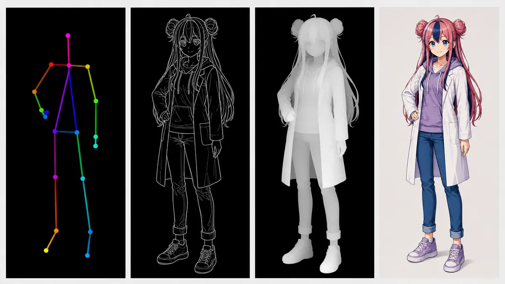
뼈대 가이드를 줬는데 결과 그림의 팔 길이가 짧습니다. 무엇을 확인할까요?
뼈대는 관절 위치만 정합니다. 1부의 비례(팔 = 머리 길이의 약 2.5~3배)를 가이드 자체가 지켰는지 먼저 봅니다.
구조·빛·소재·화풍·금지를 차례로 골라 하나의 프롬프트로 조립합니다
여행 짐 목록을 '옷·세면도구·충전기·서류' 항목으로 나누면 잊지 않습니다.
이 시리즈의 Genspark 그림 요청문이 모두 이 순서(고정값 → 자세 → 빛 → 소재 → 화풍 → 금지)로 쓰였습니다. 7부 실전 연습장에서 다시 연습합니다.

항목: ① 캐릭터 고정 문장 ② 자세 ③ 빛(방향과 그림자 방향을 같이) ④ 옷 소재(흐름·꺾임) ⑤ 화풍 ⑥ 금지 목록.
빛을 '왼쪽 위'로 고르면 그림자 방향 '오른쪽 아래'가 자동으로 붙습니다. 2부의 원리를 문장이 대신 지킵니다.
작업에서는 이 틀을 저장해 두고 항목만 바꿔 씁니다. 점검표 점수가 낮으면 빠진 항목이 표시됩니다.
고정값 → 자세 → 빛(그림자 방향까지) → 화풍 → 금지 순서입니다.
Full body character illustration, vertical 2:3. High-quality anime illustration, clean confident lineart, two-tone cel shading with soft highlights, natural proportions of a young adult woman in her early twenties. Character (match the attached reference sheet exactly): Haru, a cheerful lab assistant, long straight pink hair reaching the waist with navy blue streaks, including a thick navy streak down the center of the bangs, two round slightly messy hair buns on top of the head, a small ahoge, big bright blue eyes, lavender hoodie with white drawstrings over a white t-shirt, open white knee-length lab coat, rolled-up blue jeans, lavender sneakers. Modest outfit exactly as described. Pose: standing upright in a three-quarter view turned slightly to the right, left arm relaxed at her side, right hand resting on her hip. Lighting: soft daylight from the upper left, form shadows on the right side of the body, a soft cast shadow on the floor toward the lower right. Background: plain off-white studio background. No text, no letters, no logos, no watermark, no revealing clothing, not resembling any famous anime character, no pixel art.
조립한 프롬프트로 나온 그림에서 모아의 리본이 오른쪽에 있습니다. 문장에는 왼쪽이라고 있었습니다. 다음 순서는?
① 좌우 반전 출력인지 확인(6부 f2) ② 참고 그림을 함께 넣기 ③ 여러 장 생성해 고르기. 문장이 맞아도 결과는 확인해야 합니다.
5부 5단계 조립기에서 '모아 · 벤치에 앉기 · 왼쪽 위 빛 · 부드러운 천 · 반실사 · 금지 목록'을 고른 문장을 그대로 넣습니다. 이어서 세 사람을 한 장에 그려, 여러 캐릭터의 고정값이 서로 섞이지 않는지 확인합니다.
조립기에서 같은 항목을 고르면 이 문장이 나옵니다. 첨부: 모아 설정 시트
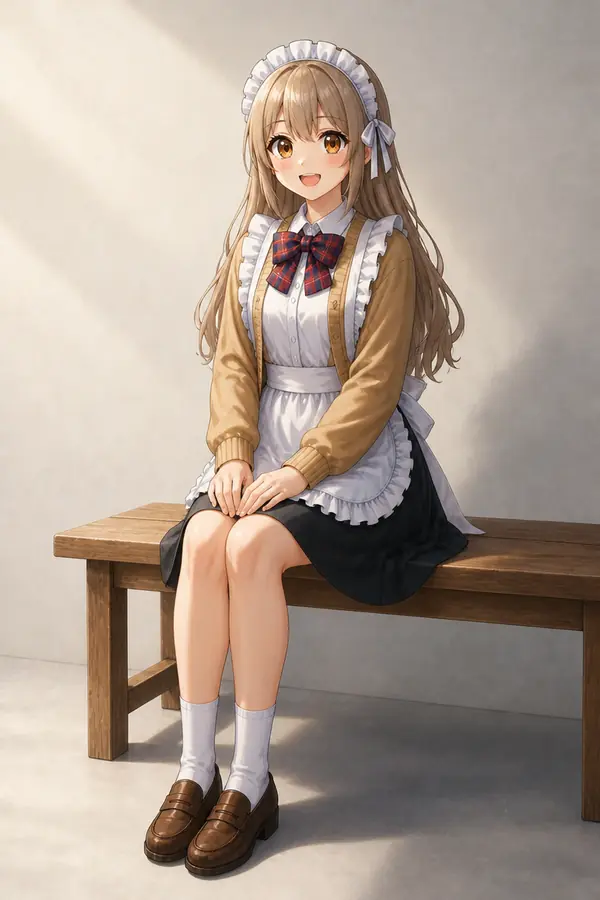
Character (keep exactly): Moa, a gentle cheerful maid intern, long ash-beige hair with soft wavy ends and neat bangs, white frilled maid headband with a thin white ribbon over the LEFT ear, amber-brown eyes, white shirt with a red and navy plaid bow tie, camel knit cardigan, white frilled apron, black skirt, white socks, brown loafers. Pose: sitting upright on a bench, both hands resting on the knees. Lighting: soft daylight from the upper left; form shadows on the right side of the body, cast shadow on the floor toward the lower right. Fabric: soft fabric with rounded flowing S-shaped folds and gentle sagging; folds start from contact points (shoulders, waist, bent joints) and hang by gravity. Style: semi-realistic 2.5D digital painting, realistic proportions and fabric textures, slightly stylized face. Negative: no text, no letters, no logos, no watermark, no pixel art, no revealing clothing, no mirrored image, not resembling any famous anime character, five fingers on each hand.
여러 명을 한 번에 그리면 특징이 옆 사람에게 옮겨 가기 쉽습니다. 사람마다 위치를 정하고 고정 문장을 따로 적었습니다. 첨부: 하루·시아·모아 설정 시트
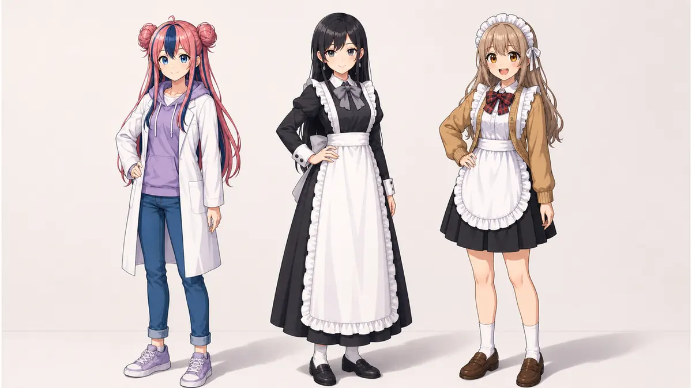
Wide group illustration, horizontal 16:9. Three young adult women standing side by side, full body, three-quarter view, each with her own exact design (match the attached reference sheets): LEFT: Haru, a cheerful lab assistant, a young adult woman in her early twenties, long straight pink hair reaching the waist with navy blue streaks, including a thick navy streak down the center of the bangs, two round slightly messy hair buns on top of the head, a small ahoge, big bright blue eyes, lavender hoodie with white drawstrings over a white t-shirt, open white knee-length lab coat, rolled-up blue jeans, lavender sneakers. CENTER: Sia, a calm maid intern, a young adult woman in her early twenties, long straight jet-black hair reaching the waist with side-swept bangs, calm gray eyes, small silver drop earrings, long-sleeved charcoal-black maid dress with puffed shoulders and white lace cuffs, white high collar with a large soft gray bow, long white frilled apron reaching the ankles, white socks, black flat shoes, no headdress. RIGHT: Moa, a gentle cheerful maid intern, a young adult woman in her early twenties, long ash-beige hair with soft wavy ends and neat bangs, white frilled maid headband with a thin white ribbon over the LEFT ear, big round amber-brown eyes, white shirt with a red and navy plaid bow tie, camel knit cardigan with ribbed cuffs, white frilled apron, black knee-length skirt, white socks, brown loafers. Keep each character's features separate: only Moa wears a headband, only Haru has hair buns, Sia has no headdress. Lighting: one soft daylight from the upper left for all three, cast shadows on the floor toward the lower right. High-quality anime illustration, clean lineart, two-tone cel shading with soft highlights. Bright plain studio background. No text, no letters, no logos, no watermark, no revealing clothing, not resembling any famous anime character, five fingers on each hand.
'직접 만들어 보기'에서 나온 그림을 출발 그림으로 삼아, 문장 하나로 원리 하나만 바꿉니다. 한 번에 하나만 바꿔야 무엇 때문에 달라졌는지 알 수 있습니다. 오른쪽 그림은 같은 문장을 고치지 않고 넣어 얻은 첫 결과이며, 여러분의 결과는 조금씩 다를 수 있습니다. 예상과 달랐던 점도 '실제로 해 보니'에 그대로 적었습니다.
조립기 문장에서 화풍 항목만 실사풍으로 바꿉니다. 5부 2단계 '화풍 바꾸기'와 3단계 '얼마나 다시 그릴까'를 함께 연습합니다. 화풍이 바뀌어도 리본 위치·빛 방향 같은 고정값은 남아야 합니다.
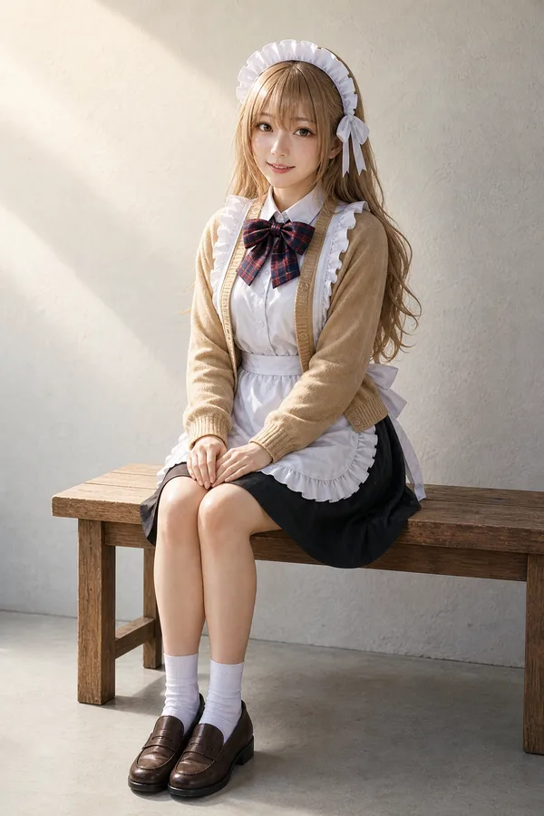
Same image. Change only the style: photorealistic studio photograph of a fictional adult model in her early twenties cosplaying this original character, 50mm lens, natural skin texture, real knit and cotton fabric with natural wrinkles. Keep the same pose on the bench, the white ribbon over the LEFT ear, the lighting from the upper left and the same framing. Not resembling any real celebrity.
이 문장의 뜻 — 화풍만 '캐릭터를 코스프레한 가상의 20대 성인 모델' 스튜디오 사진으로. 벤치 자세·왼쪽 귀 리본·왼쪽 위 빛·구도는 그대로.
Same image. Change only: the bow at her collar must match the attached anime reference exactly — a bright red plaid bow with thin dark green and white lines, same size and shape. Keep the photo style, the fictional adult cosplay model, her face, pose, bench, lighting and everything else exactly the same.
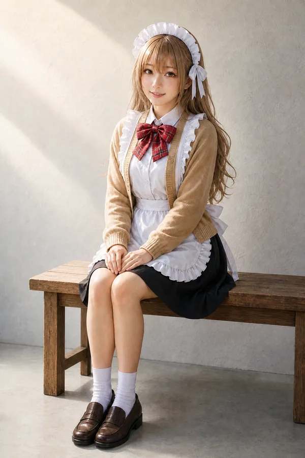
다시 해 보니 — 리본 넥타이가 빨간 체크로 돌아왔고, 얼굴·자세·빛·벤치는 그대로입니다. 고정값 하나가 흔들리면 원래 그림을 함께 첨부하고 그 하나만 되돌리면 된다는 것을 보여 줍니다.
다시 볼 원리5부 2단계 화풍 바꾸기
여러 사람이 있는 그림에서 한 명만 바꿀 때 다른 사람이 함께 바뀌지 않는지 확인합니다. 5부 1단계 고정 문장과 '한 번에 하나만 바꾸기' 원칙을 연습합니다.
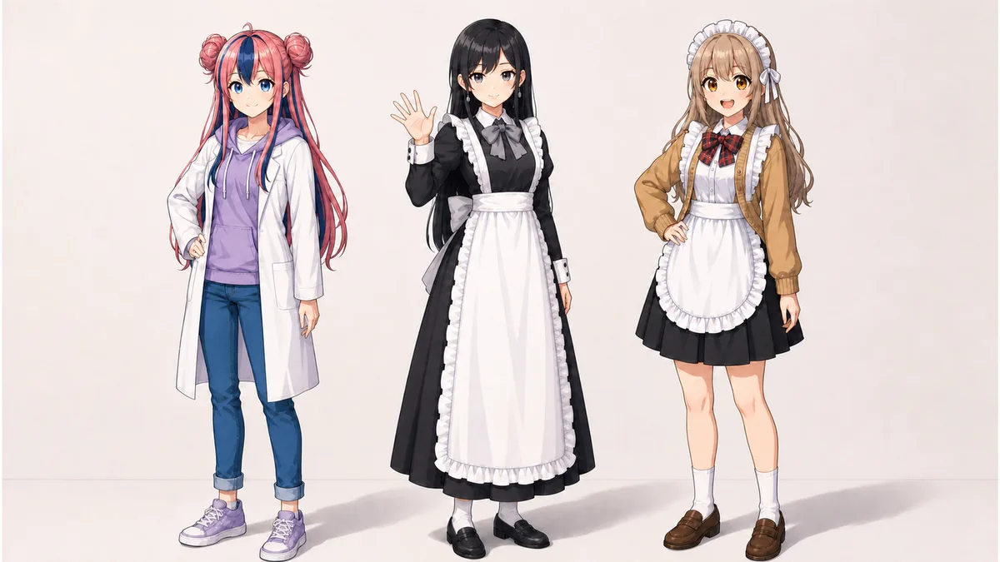
Same image. Change only Sia: she now raises her right hand in a small friendly wave. Keep Haru and Moa exactly the same, keep all three designs separate, the same lighting and the same framing.
이 문장의 뜻 — 시아만 오른손을 들어 손을 흔들게. 하루와 모아는 그대로, 세 사람 특징은 섞이지 않게.
다시 볼 원리5부 1단계 캐릭터 고정 문장

| 항목 | 주판봇 | 초파리 |
|---|---|---|
| 닮음(외형 고정값) | 9 | 9 |
| 입체감(빛·그림자) | 8 | 7 |
| 자연스러움(비례·천) | 7 | 8 |
| 합계 | 24 | 24 |


점수는 이야기 속 예시입니다. 실제 그림을 평가한 값이 아닙니다.
| 주제 | 한 줄 | 작업에서는 |
|---|---|---|
| 고정 문장 | 없음·좌우도 고정값 | 매번 같은 문장 |
| 화풍 | 늘리기 ≠ 다시 그리기 | 같은 자세·빛에 화풍만 |
| 강도 | 다시 그리는 단계 = 강도 × 전체 | 낮으면 픽셀, 높으면 다른 사람 |
| 가이드 | 뼈대·윤곽·깊이 | 구조는 지도로 |
| 조립 | 고정→자세→빛→소재→화풍→금지 | 빛과 그림자 방향을 함께 |

이 페이지에 나온 개념·방법·비유·쓰임을 모았습니다. 검색하고, "설명 보러 가기"로 본문에 돌아갑니다.
지식 색인을 출처와 함께 파일로 내려받습니다. 서지 관리는 BibTeX·RIS, 온톨로지 편집은 Turtle, 그래프 도구는 CSV, 여러 페이지 합치기는 kg.json입니다.